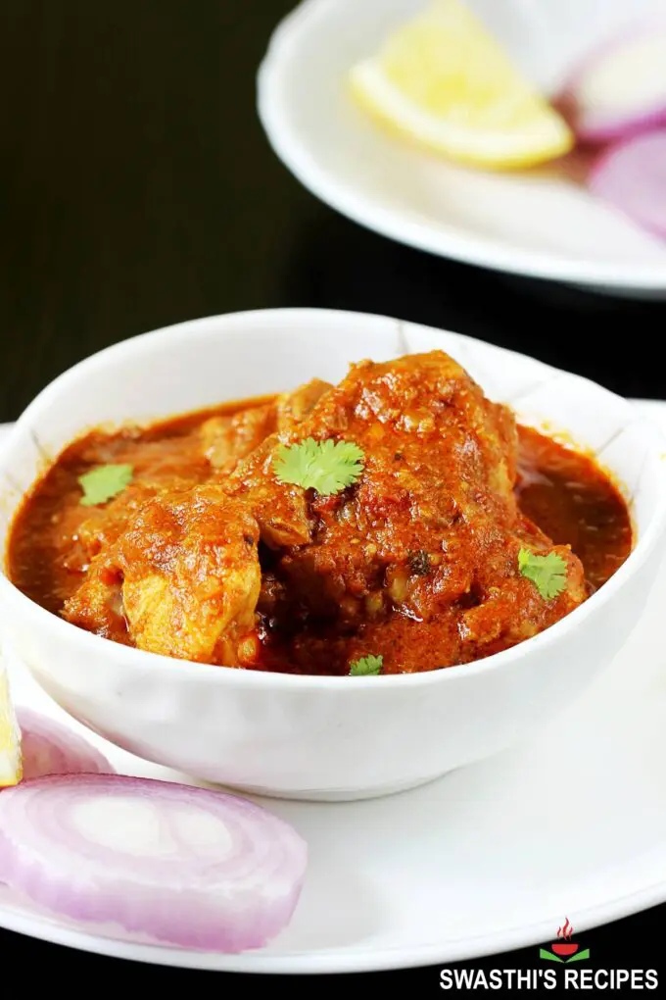

Aussie Chicken
Description
This post will guide you to make the best dish using pantry staples. This is one of the easiest that even a novice or a bachelor can cook with an amazing outcome. It not only tastes delicious but is also very flavorful with soft, tender & succulent pieces of chicken. Serve it with
Directions
- Heat 2 tablespoons of oil in heavy bottom pan. When the oil turns hot, add ! small bay leaf, 2 inch cinnamon piece, 4 cloves, 3 green cardamoms
- Add 1 cup finely chopped onions and 1 green chili pepper, Saute the onions till they turn golden. To speed up, add another tablespoon of oil
- Add 1 tablespoon ginger garlic paste. Make sure the onions turn golden before adding ginger garlic
- Saute ginger garlic for about 2 to 3 minutes or until the raw smell disappears completely
- Add 1/2 cup tomatoes (chopped or mashed or pureed). Also add 1/4 teaspoon turmeric and 1/2 teaspoon salt
- Add 1 teaspoon red chili powder and ¼ cup whisked yogurt (curd). Check the tips section below to know tips on how to prevent yogurt from splitting in the curry. To substitute yogurt, you can soak 12 cashew nuts or almonds or 3 tablespoons white poppy seeds in ½ cup hot water for 30 minutes. Blend it to a smooth paste & add here.
- Serve hot with masala